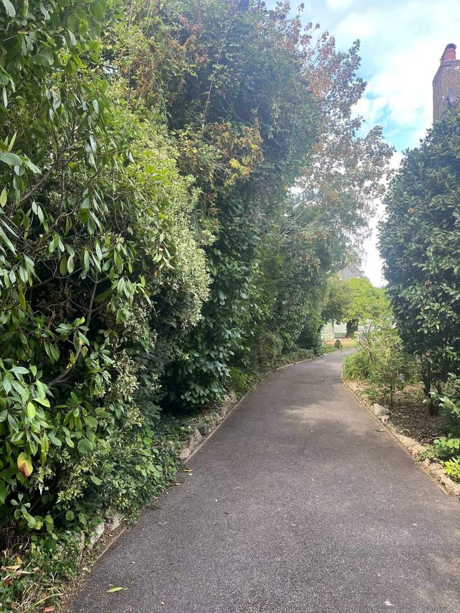

Garden clearance in Chelmsford
Overgrown, neglected or inherited gardens cut back, cleared and taken away. Usually done in a day, at a price fixed before we start.
- 5-star rated on Google
- Fully insured
- Photo report every visit
- Licensed waste carrier
Gardens get away from people for all sorts of reasons: a busy year, a new home, illness, or a property that's been empty. Whatever the reason, we'll get it back to a garden you can use, without judgement and without leaving a mess behind.
What we clear
- Long grass and overgrown lawns, cut down and tidied
- Weeds and brambles in beds, borders, paths and patios
- Overgrown shrubs and hedges cut back and reshaped
- Blocked side paths and access routes opened up
- All green waste loaded and removed under our Upper Tier waste carrier licence
What it costs
Every clearance is priced as a fixed, itemised quote before we start. As a guide, a full front-and-back garden tidy in Chelmsford in August 2026, including weed removal, lawns cut and edged, and all waste taken away, came to £630.
Empty, probate and rental properties
We regularly clear gardens for executors, solicitors, landlords and letting agents. We can keep the garden tidy until the property is sold or let, and send a dated photo report after every visit so you don't need to go and check. Our sister company, Forum Property Services, can clear the house too.
After the clearance
Most gardens stay under control with a regular visit every two to four weeks. We'll suggest a schedule when we finish, with no obligation to take it.
Areas we cover
We're based just outside Chelmsford and work across Chelmsford, Great Waltham, Broomfield, Writtle, Great Baddow, Springfield, Danbury, Boreham, Little Waltham, Witham, Maldon and South Woodham Ferrers. For larger jobs and commercial contracts we also cover the rest of Essex and East London.

Frequently asked questions
How long does a garden clearance take?
Most gardens are cleared in a day. Very large or badly overgrown plots may take longer, and we'll tell you up front.
Can you quote from photos?
Often, yes. Send a few photos and the postcode on WhatsApp to 07504 548304. If we need to see it, the site visit is free.
Do you remove the waste?
Yes, everything is taken away. We're registered with the Environment Agency as an Upper Tier waste carrier (CBDU656246), so it's disposed of legally.
Do you clear gardens at empty or probate properties?
Yes. We work with executors, solicitors and agents, and can keep the garden tidy until sale with a photo report after each visit.